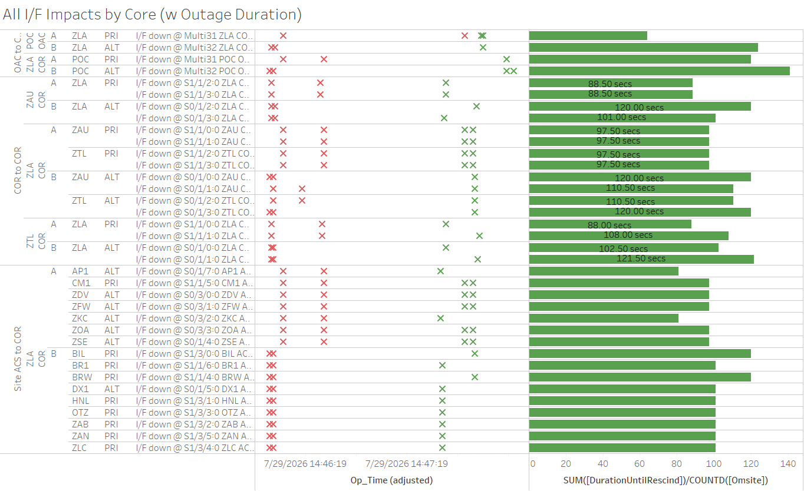
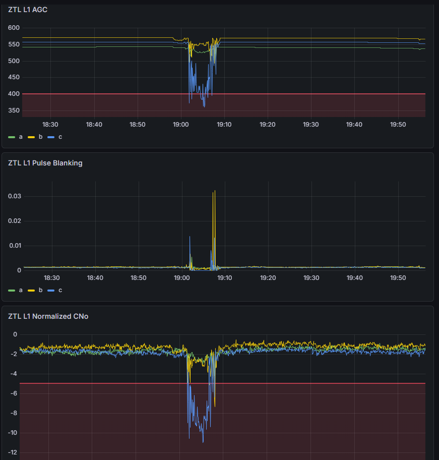

Weekly Highlights 20260729-20260805
SSM-WAAS-065 / DFO-2 Cutover Activities
SSM-WAAS-065 was released on 2/12/26 to upgrade the WAAS subsystems by performing the following hardware changes:
- Remove Legacy PCUs / Replace with new Power Distribution Units (PDUs) and DC Power Supplies (DCPS)
- Remove Legacy KVMs / Replace with new form-fit-function KVM
The DFO-2 Field Test Activities to implement limited operational capability (LOC) of L5 messaging are also being scheduled.
DFO-2 activities will be delayed...
- 8/5 01:48 - SSM-WAAS-065 - YFB
WRE-C to Maintenance and Shutdown for upgrade to
W7.442L; restored to Normal at 8/5
07:22
- PDU did not have Factory Reset option on display menu causing difficulty during configuration
- Was unable to establish comms for either Ring for new PDU... will come back to it when we do the next WRE...
- 8/5 20:18 - SSM-WAAS-065 - YFB WRE-B to Maintenance and Shutdown for upgrade to W7.442L; restored to Normal at 8/5 22:39
- 8/6 13:11 - SSM-WAAS-065 - YFB WRE-A to Maintenance and Shutdown for upgrade to W7.442L...
15 WRS sites remain
| Target Cutover Date | Site | Site Type | Outage? (Y/N) |
|---|---|---|---|
| 8/4/2026 | YFB - Iqaluit | WRS5 | N |
| 8/10/2026 | CDB - Cold Bay FSS | WRS2 | N |
| 8/10/2026 | YWG - Winnipeg | WRS5 | Y |
| 8/13/2026 | MMX - Mexico City | WRS5 | Y |
| 8/18/2026 | MMD - Merida | WRS5 | Y |
| 8/19/2026 | BET - Bethel FCT | WRS5 | Y |
| 8/20/2026 | ZTL - Atlanta ARTCC | WRS2 | Y |
| 8/21/2026 | FAI - Fairbanks AFSS | WRS5 | Y |
| 8/25/2026 | BIL - Billings TRACON | WRS5 | Y |
| 8/26/2026 | ZDV - Denver ARTCC | WRS2 | Y |
| 9/1/2026 | BRW - Barrow FSS | WRS5 | Y |
| 9/1/2026 | MTP - Tapachula | WRS5 | Y |
| 9/3/2026 | MPR - Puerto Vallarta | WRS5 | Y |
| 9/9/2026 | MSD - San Jose Del Cabo | WRS5 | Y |
| 9/15/2026 | HNL - Honolulu AFSS | WRS2 | N |
- We will not take an outage at some WRS sites to avoid service area impacts.
- SENEAM picked up the crates for MPR, MTP, MSD from the Embassy warehouse on 7/28 to handle shipping to the end destinations. All crates should be delivered within the next week!
| Site | Site Type | Upgrade Start | Upgrade Complete |
|---|---|---|---|
| POC - San Diego TRACON | OM | 2/19/2026 18:54 | 2/19/2026 21:28 |
| ZTL - Atlanta ARTCC | WMS / WCN | 2/19/2026 22:05 | 2/20/2026 2:02 |
| ZLA - Los Angeles ARTCC | WMS / WCN | 2/24/2026 16:24 | 2/24/2026 19:56 |
| ZDC - Washington, D.C. ARTCC | WMS / WCN | 2/26/2026 14:04 | 2/26/2026 19:26 |
| ZAU - Chicago ARTCC | WCN | 3/3/2026 14:15 | 3/3/2026 16:22 |
| NOC - Warrenton ATCSCC | OM | 3/3/2026 16:47 | 3/3/2026 19:21 |
| SZ1 - Santa Paula | SGS | 3/4/2026 17:08 | 3/4/2026 20:59 |
| CM1 - South Mountain | SGS | 3/5/2026 16:45 | 3/6/2026 3:04 |
| AP1 - Napa | SGS | 3/10/2026 15:15 | 3/10/2026 18:27 |
| DX1 - Southbury | SGS | 3/12/2026 13:06 | 3/12/2026 18:33 |
| BR1 - Brewster (S97A) | SGS | 3/25/2026 16:03 | 3/25/2026 21:46 |
| BR2 - Brewster (S97B) | SGS | 3/26/2026 15:54 | 3/26/2026 21:09 |
| ZOA - Oakland ARTCC | WRS2 | 3/31/2026 16:31 | 4/2/2026 18:00 |
| ZMA - Miami ARTCC | WRS2 | 4/2/2026 0:17 | 4/2/2026 5:45 |
| ZLA - Los Angeles ARTCC | WRS2 | 4/14/2026 15:39 | 4/14/2026 20:35 |
| ZNY - New York City ARTCC | WRS2 | 4/15/2026 13:20 | 4/15/2026 17:23 |
| ZFW - Fort Worth ARTCC | WRS2 | 4/23/2026 17:52 | 4/23/2026 22:22 |
| ZBW - Boston ARTCC | WRS2 | 4/28/2026 12:56 | 4/28/2026 19:47 |
| ZAB - Albuquerque ARTCC | WRS2 | 4/29/2026 13:55 | 4/29/2026 18:11 |
| ZMP - Minneapolis ARTCC | WRS2 | 5/6/2026 13:39 | 5/6/2026 18:13 |
| ZSU - San Juan CERAP | WRS2 | 5/12/2026 12:59 | 5/14/2026 14:29 |
| ZHU - Houston ARTCC | WRS2 | 5/27/2026 13:45 | 5/27/2026 17:00 |
| ZAN - Anchorage ARTCC | WRS2 | 5/28/2026 16:43 | 5/28/2026 21:02 |
| ZSE - Seattle ARTCC | WRS2 | 6/2/2026 15:26 | 6/2/2026 18:28 |
| ZKC - Kanas City ARTCC | WRS2 | 6/9/2026 14:05 | 6/9/2026 18:43 |
| ZAU - Chicago ARTCC | WRS2 | 6/10/2026 13:31 | 6/10/2026 17:20 |
| ZJX - Jacksonville ARTCC | WRS2 | 6/16/2026 13:47 | 6/16/2026 19:27 |
| ZOB - Cleveland ARTCC | WRS2 | 6/17/2026 13:40 | 6/17/2026 16:25 |
| OTZ - Kotzebue FSS | WRS5 | 6/23/2026 18:43 | 6/23/2026 20:56 |
| JNU - Juneau AFSS | WRS2 | 6/26/2026 17:02 | 6/26/2026 19:26 |
| ZLC - Salt Lake City ARTCC | WRS2 | 6/30/2026 15:45 | 6/30/2026 18:38 |
| ZDC - Washington, D.C. ARTCC | WRS2 | 7/7/2026 13:38 | 7/7/2026 19:06 |
| ZME - Memphis ARTCC | WRS2 | 7/14/2026 15:03 | 7/14/2026 20:51 |
| YQX - Gander | WRS5 | 7/17/2026 12:02 | 7/17/2026 16:22 |
| YYR - Goosebay | WRS5 | 7/21/2026 13:00 | 7/21/2026 16:17 |
| YFB - Iqaluit | WRS5 | 8/5/2026 01:48 | 8/5/2026 07:22 |
L1/L2 Bias Alarms
Data missing due to waas.faa.gov Perfmon down since 7/28... data gap 7/28-8/4....
- 8/5 10:32 - MSD alarmed with L1/L2 Bias
7/29 - MMX WRE-B to Maintenance -- RFI Monitoring
- 7/29 14:20 - MMX WRE-B to Maintenance to monitor site RFI -- ref LAD 1456891832
7/29 - ZLA COR Router Comm Outage / Selected Source Switch
- 7/29 14:45 - Comm outage impacting both ZLA COR
Routers for ~140 seconds
- 7/29 14:45 - S15 Uncommanded Selected Source Switch from ZLA->ZTL then back from ZTL->ZLA ~3 seconds later

7/29 - ZTL WRE-C Subframe Reasonability
- 7/29 19:04 - ZTL WRE-C alarmed with SE 728 Subframe Reasonability for all C&Vs

7/29 - ZFW WRE-C Fault
- 7/29 20:46 - ZFW WRE-C Faulted with SEs 29,30,52,53,59; Control Powered but Freq Std initialization failed -- ref LIR 1189482924; Control Powered a few times and eventually restored to Normal at 7/29 22:44
7/30 - ZSU WRE-C RF Site Survey
- 7/30 20:08 - ZSU WRE-C returned to Maintenance and left in Verification Mode for RF Site Survey -- ref LAD 311566321
- 7/31 14:22 - ZSU WRE-C restored to Normal Mode following RF Site Survey
7/31 - BET WRE-A Freq Std Failure
- 7/31 13:55 - BET WRE-A Faulted with SEs
28,52,53,59 indicating Freq Std Failure with
18+ yrs old & high allen voltage deviation-- ref LIR 1459070632; attempted multiple Control Powers but was unable to restore...
8/1 - ZSU WRE-C PDU Comm Troubleshooting
- 8/1 04:42 - ZSU WRE-C to Maintenance Mode and Shutdown to troubleshoot ether disconnect on PDU-3; unable to Control Power without further support from local techs -- ref LIR 1459140932
- 8/3 17:15 - ZSU PDU-C Comms cleared (down since 7/22)
- 8/3 17:42 - ZSU WRE-C returned to Maintenance Mode; restored to Normal at 8/3 18:30
8/1 - HNL WRE-A Faults
- 8/1 04:43 - HNL WRE-A Faulted with SEs 28,29,52,53,59; Freq Std is 18+ years old with high allen voltage deviation so may fail soon; Control Powered and restored to Normal at 8/1 05:45
- 8/2 21:44 - HNL WRE-A Faulted with SEs 28,29,52,53,59; Control Powered and restored to Normal at 8/2 23:14
8/3 - ZTL GPS Clock RFI
- 8/3 19:41 - ZTL GPS Clock alarmed with SE 200 GPS Clock Reception Problem and SE 202 GPS Clock Not Timelocked; concurrent with ZTL WRE-C SE 728 Subframe Reasonability for ZLA and ZTL C&Vs; SEs rescinded at 8/3 19:51
8/4 - FAI WRE-A Receiver Alarms
- 8/4 08:11 - FAI WRE-A alarmed with SE 52 Rcvr Non-Critical Fault; last event cleared at 8/4 09:17
- 8/4 15:28 - FAI WRE-A alarmed with SE 52 Rcvr Non-Critical Fault; last event cleared at 8/4 18:27
8/4 - GUS Tool Upgrades (Non-Op)
- 8/4 21:48 - All GUS Tap Tool Ports Down / Up due to engineering tool upgrade
Various Comm Impacts
* Only captures major / long-term comm outages
Other Sites
- 7/29 04:28 - YQX Ring 1 PRI comms down hard; line cleared at 7/29 06:03 (~5702 seconds)
- 7/30 14:25 - CM1 Ring 1 PRI comms down hard; line cleared at 7/31 00:13 (~35305 seconds)
- 7/30 15:28 - ZHU Ring 1 ALT / Ring 2 PRI comms flapping; last events cleared at 7/30 15:34 (~88 seconds total)
- 7/30 20:57 - CDB Ring 1 comms down hard; line cleared at 7/30 21:20 (~1352 seconds)
- 7/31 07:41 - MTP Ring 1 comms down hard -- OFFLINE; line cleared at 7/31 07:51 (~596 seconds)
- 8/2 21:17 - BET Ring 2 PRI comms flapping; line cleared at 8/3 13:04 (~17033 seconds total)
- 8/3 16:26 - CDB Ring 2 comms down hard; line cleared up at 8/3 16:43 (~982 seconds)
- 8/3 18:10 - CDB Ring 2 comms down hard; line cleared at 8/3 18:29 (~1116 seconds)
- 8/3 18:43 - CDB Ring 1 comms down hard; line cleared at 8/3 19:00 (~1034 seconds)
- 8/3 20:24 - HNL Ring 1 PRI comms down hard; line cleared at 8/3 20:26 (~112 seconds)
- 8/4 01:03 - ZSU Ring 1 ALT / Ring 2 PRI comms restored (~448696 seconds; down since 7/29)
- 8/4 10:16 - BET Ring 2 PRI comms flapping; last event cleared at 8/5 09:34 (~21078 seconds total)
- 8/5 04:01 - YQX Ring 1 PRI comms down hard; line cleared at 8/5 05:18 (~4601 seconds)
- 8/5 10:48 - BET Ring 1 PRI / Ring 2 ALT comms down hard; both lines cleared at 8/5 10:52 (~282 seconds)
- 8/5 10:54 - BRW Ring 1 PRI / Ring 2 ALT comms down hard; both lines cleared at 8/5 10:58 (~273 seconds)
- 8/5 11:38 - OTZ Ring 1 PRI / Ring 2 ALT comms down hard; both lines cleared at 8/5 11:42 (~239 seconds)
7/29-8/4 ZSU Ring 1 ALT / Ring 2 PRI
ISR 0729-1787
--
Ring 1: ref LIR
1189725124 / Ring 2: ref LIR
1189726024
- 7/29 20:25 - ZSU Ring 1 ALT / Ring 2 PRI comms down hard...
- 8/4 01:03 - ZSU Ring 1 ALT / Ring 2 PRI comms restored (~448696 seconds; down since 7/29)
7/24 CM1 Ring 2 ALT Comms
ISR 0724-1201 --
ref LIR
313606721
- 7/24 08:07 - CM1 Ring 2 ALT comms flapping; down hard at 7/24 15:52...
7/22 BET Ring 1 ALT Comms
ISR 0723-0023 --
ref LIR
1186842824
- 7/22 20:08 - BET Ring 1 ALT / Ring 2 PRI comms flapping; last events cleared at 7/22 21:09 (~696 seconds total)
- 7/22 20:38 - BET Ring 1 ALT / Ring 2 PRI
comms flapping...
- 7/22 23:14 - BET Ring 1 ALT comms down hard...
- 7/23 08:19 - BET Ring 2 PRI last event cleared (~10922 seconds total)
5/11/23 Mexico Ring 2 Down Hard...
- 5/11/23 17:01 - MX Ring 2 SatCom upgrade begins; MX Ring 2 OFFLINE until upgrade troubleshooting is complete...
- Targeting network upgrade in CY26
- 3/12/26 Disconnect order
List of current offline WREs
List of current offline WREs -- ref WAAS Status Monitor
All Depot shipments to Mexico are halted until the customs process can be finalized
Currently working to assess MX Inventory to determine equipment refresh and restoration needs...
BET
- BET WRE-A - 7/31/26-...
- BET WRE-A Faulted with SEs 28,52,53,59
indicating Freq Std Failure with
18+ yrs old & high allen voltage deviation-- ref LIR 1459070632; attempted multiple Control Powers but was unable to restore...
MMX -- WRS OFFLINE
- MMX WRE-B - 7/29/26-... - MMX WRE-B to Maintenance to monitor site RFI -- ref LAD 1456891832
- MMX WRE-C - 3/20/26-...
- MMX WRE-C to Maintenance and Restarted;
Receiver inits failing...
unable to restore -- ref LIR
1133124724...
- 3/23 16:34 - MMX WRE-C Control Powered OFF until repair...
MMD
- MMD WRE-C - 10/20/25-... - Good Freq Std swapped into WRE-A to restore -- ref LIR 211505621
MTP -- WRS OFFLINE
- MTP WRE-A - 9/23/25-...
- PCU Failed after power
outage; PCU-B swapped into WRE-A
but DC output is non-functional... ref LAD
1060696524
- Planning to swap PCU-C into WRE-A -- this will remove WRE-C from service, but allow us to restore WRE-A for analysis
- MTP WRE-B - 11/18/24-... - Receiver inits failing due to no DC Power from PCU; PCU swapped with PCU-A after PCU-A failed -- ref LIR 898330924
MPR
- MPR WRE-B - 5/3/24-... - Inits failing -- looks like a bad freq std; due to shipping issues, there is no spare Freq Std and no ETA to recover WRE-B... -- ref LIR 44170821

Major Events


Core I/F Status

Comm Events

Mexico Comm Status